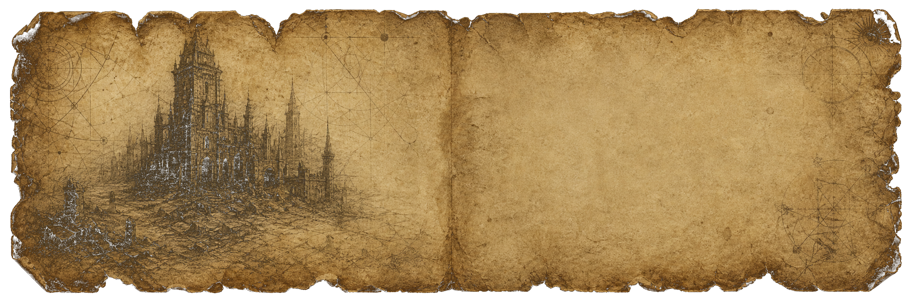
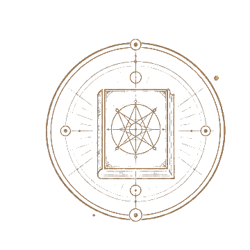
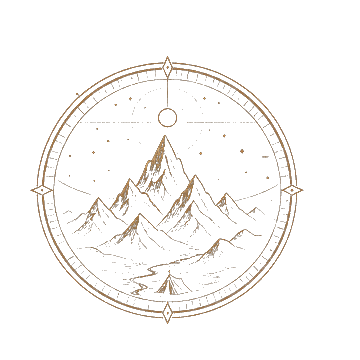
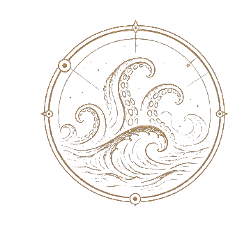
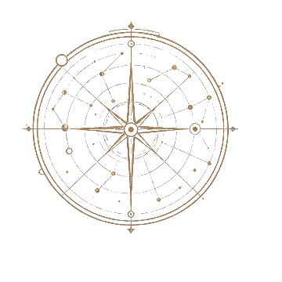

重点文献
已收录，核心文献
死灵之书（节录）
The Necronomicon (Excerpts)
阿卜杜勒·阿尔哈兹莱德 著｜约公元730年
据传由大马士革的狂人所著，记录了古老而禁忌的知识，其中容纳旧日支配者的召唤、仪式与宇宙的结构。
查看文献详情 →
已收录，核心文献
The Necronomicon (Excerpts)
阿卜杜勒·阿尔哈兹莱德 著｜约公元730年
据传由大马士革的狂人所著，记录了古老而禁忌的知识，其中容纳旧日支配者的召唤、仪式与宇宙的结构。
查看文献详情 →



文献库按年代、地点、主题和叙述视角整理。每条记录保留作品信息，也记录它在神话体系中的位置。
以伪史、仪式和残缺注释构成的核心文本。它不是答案，而是把读者带到更深处的索引。
一位幸存者在海上漂流后的独白，记录了泥黑海床、陌生碑文与巨物的短暂显形。
沙漠深处的残垣揭开了早于人类文明的城市结构，时间在石门之后变得不可信。
梦、雕像、海难和审讯记录被拼接在一起，指向拉莱耶及沉睡中的旧日支配者。
陨石、农场和无法命名的颜色构成一组缓慢腐蚀的证据，异常并不喧哗，却会改变土地。
考察队进入远古城市的壁画走廊，发现人类文明只是漫长地质史中的迟到注脚。
下方时间线混合虚构文献、作品发表节点和档案馆内的研究注释。它帮助读者按年代进入神话结构，而不是按百科词条迷路。
死灵之书的传说被置于东方手稿、译本和残页之间，成为后续作品引用的黑色母题。
达贡式叙述建立了“个体目击、无法证实、精神崩塌”的档案口吻。
克苏鲁的呼唤把散落的梦、警局记录、考古物和海难报道组成可怕的整体。
星之彩将恐惧从神殿和远海带到农田，让宇宙冷漠感落在日常生活中。
疯狂山脉把尺度推到地质年代，人类从主角变成迟来的旁观者。
海边小镇、家族谱系和生物混血把神话恐惧转向身份本身。
神话体系的关键不在于记住每个名字，而在于理解文本如何反复使用梦境、深海、远古城市、禁书和非人尺度。
这里提供一个轻量检索台。你可以按主题筛选，也可以输入关键词。所有内容都是前端本地状态，适合静态部署和开源复用。
显示全部档案
页面以静态 HTML、CSS 和 JavaScript 构建，适合 GitHub Pages。所有可交互内容都在浏览器本地运行，不依赖后端服务。